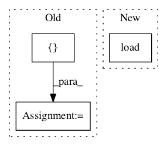

a9ae9989261da6aa85e452ace0c9915fe7c90d22,src/garage/tf/baselines/gaussian_cnn_baseline.py,GaussianCNNBaseline,fit,#GaussianCNNBaseline#Any#,256

Before Change
self._y_std.load(np.std(ys, axis=0, keepdims=True) + 1e-8)
if self._use_trust_region:
old_means, old_log_stds = self._f_pdists(xs)
inputs = [xs, ys, old_means, old_log_stds]
else:
inputs = [xs, ys]
loss_before = self._optimizer.loss(inputs)
tabular.record("{}/LossBefore".format(self._name), loss_before)
After Change
self._x_mean.load(np.mean(xs, axis=0, keepdims=True))
self._x_std.load(np.std(xs, axis=0, keepdims=True) + 1e-8)
self._old_network.x_mean.load(np.mean(xs, axis=0, keepdims=True))
self._old_network.x_std.load(
np.std(xs, axis=0, keepdims=True) + 1e-8)
if self._normalize_outputs:
// recompute normalizing constants for outputs
self._y_mean.load(np.mean(ys, axis=0, keepdims=True))
self._y_std.load(np.std(ys, axis=0, keepdims=True) + 1e-8)
In pattern: SUPERPATTERN
Frequency: 3
Non-data size: 3
Instances
Project Name: rlworkgroup/garage
Commit Name: a9ae9989261da6aa85e452ace0c9915fe7c90d22
Time:
Author: null
File Name: src/garage/tf/baselines/gaussian_cnn_baseline.py
Class Name: GaussianCNNBaseline
Method Name: fit
Project Name: rlworkgroup/garage
Commit Name: 8295d05ccbe3d5aaa07440f2409cb8fa69ec88fc
Time:
Author: null
File Name: tests/garage/tf/baselines/test_gaussian_mlp_baseline.py
Class Name: TestGaussianMLPBaseline
Method Name: test_is_pickleable
Project Name: rlworkgroup/garage
Commit Name: 490f5b7364da85d414f4b8e93b3699e4d1b516f5
Time:
Author: null
File Name: tests/garage/tf/baselines/test_continuous_mlp_baseline.py
Class Name: TestContinuousMLPBaseline
Method Name: test_is_pickleable